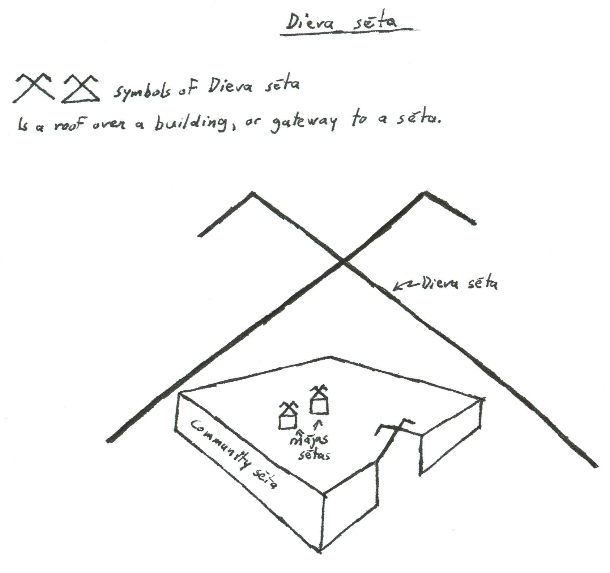
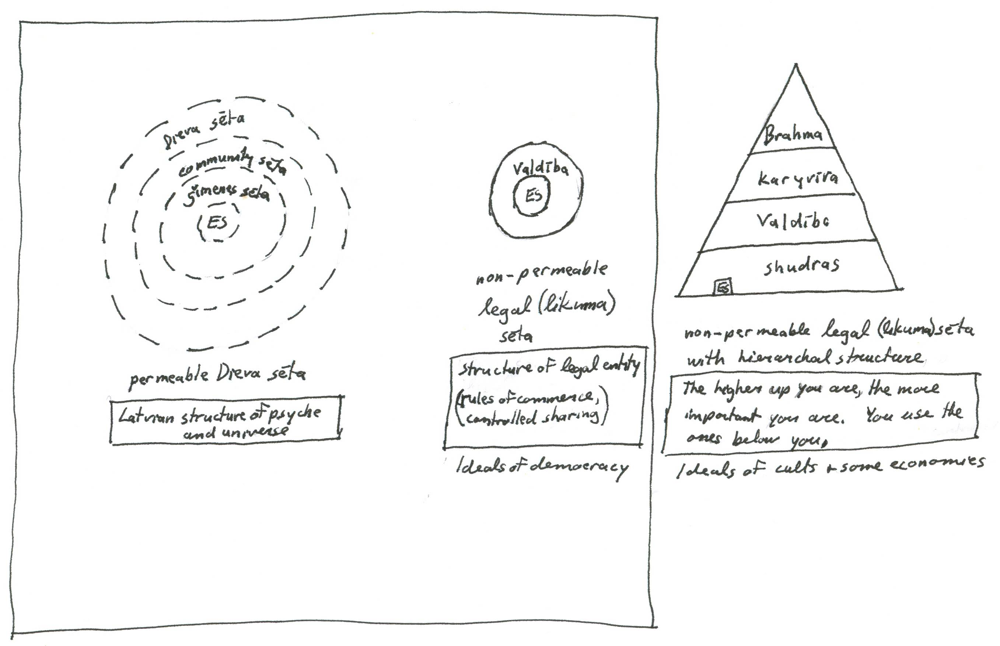

|
Fences (Sētas)
My fence analogy to describe structure of the psyche and nature
The Latvian word "sēta" means fenced in, or fence for short. It refers to all property and people within the fence. A large fence can have other smaller fences within it. The largest fenced structure is god's fence (dieva sēta), representing the whole. Smaller fences are identical in structure to god (dievs).

The diagram above illustrates god's fence (dieva sēta) with ancient graphic symbol of a roof over everything. It is god's house. Legal and political structures can exist within god's fence. A city (pilsēta "castle fence"), homestead (lauku sēta "field fence"), family (ģimenes sēta "family fence"). All spiritual and psychological structures exist within god's fence. One's self as psyche (esma), ones family resources (ģimenes sēta), and one's resources from the environment.
A demographic of people within a fence (sēta) is called a "saime". The male role leader is called "saimnieks", while the female role leader is called "saimniece". One family unit is call "ģimene".
Types of fences (sētas)
Architecturally we see fences everywhere. Some you can walk through, while others are completely impassible. In a non-physical sense the same applies. When discussing legal, community and family structures with respect to Latvian folklore, I make two categorizations: Hierarchies with non-permeable fences (sētas) and hierarchies with permeable fences (sētas) or borders.
The first diagram above illustrate permeable fenced boundaries through expanding dimensions from personal experiences to god's whole. Permeable means that things are not hoarded, but shared by default. Your own psyche (esma) is in the center, then your family (ģimene), your community, and then the all-encompassing god's fence (dieva seta). If you cannot find balance within your fence, you can borrow from other layers. All resources are borrowed, not owned. When you die, your spirit moves to another part of god's fence, while other resources from earth are returned for others to reuse.
The next illustration in the diagram shows structure with non-permeable borders. Your legal entity is in the center, and the legal entity of the community surrounds yourself. How things are owned and shared are controlled by a select few. If you need something, it should be acquired through proper legal channels; accountants and lawyers executing these functions. On a larger political scale, international trade is guided by international committees and guarded by armies and police.
We have to understand and appreciate both types of border structures to survive. To survive the world on a business basis, we have to conform to the non-permeable fence (seta) as all our political economies are based on that form. To survive in this world as healthy spirits, I believe it is most efficacious when follow the permeable fence (seta) structure.
Most dainas are about permeable fence (seta) of our human psyche and its interaction with nature. The oldest dainas explain war as sad emotional experience. The men leave, and then come back, and everything has changed. Indeed, the permeable seta describing our psyche, does not need battles, heroes or rewards. Our sunshine (saulite) does not need a reward. It always shines.
There are some newer war songs and folk epics about war in Latvian folklore. They have string references to other cultures and their symbols of war. War is celebrated. Indeed, a non-permeable fence (seta) has the battle-reward social pattern, which includes heroes, worshiping ideals, ceremonies, awards and monuments.
Organized formal religions use a non-permeable fence (seta) to describe their god entity. They have books written like legal documents, full of rules, awards and punishments. God's world in formal religions is a legal world, while god's fence (dieva seta) in Latvia folklore is a nurturing world, where each person and entity is free to make own choices on how they will learn the world and how to fit in.

SSS2010 Home |